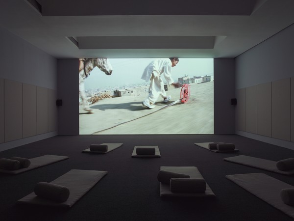
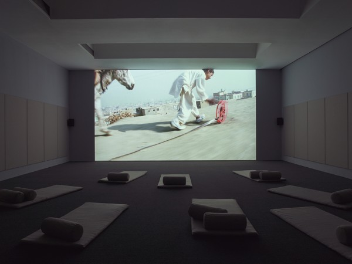
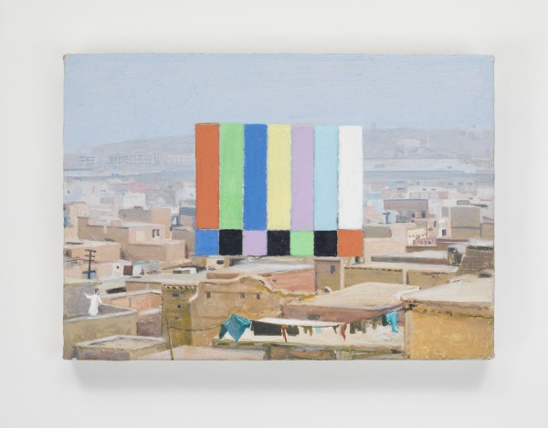
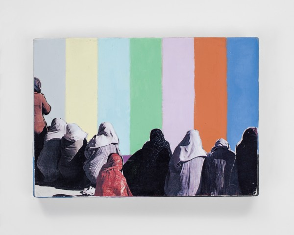
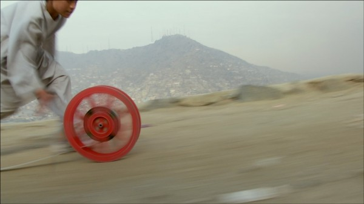

-
Burning Barriers: Francis Alÿs’ REEL-UNREEL
by Aaron Cutler February 1, 2013
 
image courtesy of David Zwirner Gallery
I’ve read many thoughtful discussions of whether Zero Dark Thirty, the new Hollywood depiction of the United States government’s hunt for Osama bin Laden, endorses torture. I’ve read few discussions, period, of whether the film endorses the Afghanistan War. This tendency to question particular aspects of how the war has been fought rather than the nature and purpose of the war itself follows the greater American media’s lead. Unlike the initially stated reasons for the Iraq War, which common wisdom came to approach as lies, the goals of the Afghanistan War were always simple, clear, unchallenged, and morally unambiguous: Get al-Qaeda. Get bin Laden.
But how much damage has the longest running overseas conflict in U.S. history done in the name of these goals? Let’s assume a few things to make our estimates conservative, and then see. Let’s assume that the States did nothing to provoke the Taliban’s attacks, and ignore how the CIA’s support of the anti-Soviet group during the Cold War helped the Taliban come to power. Let’s also assume that the government was innocent on September 11th, neither collaborating with al-Qaeda to aid the attacks, as some have suggested, nor discovering signs of the attacks months in advance and neglecting to do enough to stop them, as the 9/11 Commission Report overwhelmingly shows. Let’s then look at these statistics, courtesy of Wikipedia:
Number of people killed in the September 11th, 2001 attacks: 2,977
Number of American soldiers killed in the subsequent Afghanistan War: 2,110
Number of Afghan civilians killed in the war: Between 7,300 and 13,800
The first number is self-explanatory. The second does not account for suicides, which currently outnumber combat deaths, and the third does not account for people who have died of starvation, disease, or any other non-artillery consequence of the U.S. invasion. But even if we stick just to deaths under fire—further excluding the many people who lived through September 11th while suffering permanent physical and/or psychological damage, and the many more who have suffered them as a result of the war—we still must conclude that the American government has avenged the innocents killed on 9/11 by sacrificing nearly three-quarters as many of its own people, and killing, at minimum, more than twice as many innocent Afghans.
We don’t have a more accurate count of Afghan civilian casualties for many reasons, one being—as Zero Dark Thirty briefly alludes to—that American soldiers often haven’t been around to count the bodies. The U.S. military has increasingly phased out ground combat in favor of drones whose bombs are dropped by pilots seated in military bases in front of radar screens, often thousands of miles away. As a result, horror stories abound, if one looks for them, of wedding parties blown to bits, and family members killed while lying beside each other asleep. When Zero Dark Thirty’s CIA agent Maya (played by the beautiful, appealing star Jessica Chastain) snarls that she’d like to drop a bomb on the compound potentially containing bin Laden, she—as well as anyone who shares her view—is ignoring the bulk of the people who would come to harm.
The film tells the familiar tale of the Afghanistan War as a revenge fantasy. The loner Maya devotes years of obsession to bin Laden, then weeps after seeing his corpse. She no longer has someone that she wants other people to kill for her. For some viewers, perhaps, the sight of her tears might inspire pity. But if we want to learn about how the war has actually been run, and who its greatest casualties have really been, then we should look elsewhere.
Image courtesy of David Zwirner Gallery
One good source of information is the new omnibus film Far from Afghanistan (showing in New York next month as part of the Museum of Modern Art’s series Documentary Fortnight), which analyzes the war’s global impact by drawing connections between the decimation of Afghanistan’s general populace and the decimation of the American middle class. Another is Malalai Joya’s 2009 book A Woman Among Warlords, in which a former Afghan Parliament member speaks out against both her country’s corrupt leaders and the American efforts to keep them in power. They both strongly counter the easy Hollywood stereotyping of Afghans as terrorists, co-conspirators, and helpless victims awaiting American rescue. So does the artist Francis Alÿs’ 20-minute video REEL—UNREEL, made in collaboration with Julien Devaux and Ajmal Maiwandi and on display through February 9 along with several Alÿs paintings at New York’s David Zwirner Gallery, as well as available for free viewing on the artist’s website.
The video was shot in November 2011 (the month after the war’s 10th anniversary) on a commission from the art exhibition dOCUMENTA, as part of a Germany-Afghanistan cultural exchange. Its stated purpose is to counter negative images of Afghans in the Western media. If this is true, then we might look to the New York exhibition space itself as evidence. The entryway’s walls contain paintings of color bars, like you might see when adjusting your television; some paintings consist entirely of bars, while others collage them with photographs of people and buildings. The artist has said “I cannot paint violence,” and these canvases can be seen as rejections of the violence that audiovisual screens so frequently show. Yet the colorful, symmetrical stripes can also be seen as adding something positive to counter negative imagery, especially in the paintings that show Afghan civilians gathered around them. When we look at a group of women seated in front of the bars, or even the bars looming over the rooftops of the city, we see people transforming the world in front of them. The rectangle ceases to transmit others’ stereotypes, and becomes a screen onto which its viewers project themselves.
Image courtesy of David Zwirner Gallery
Alÿs’ past work has often made entertainment out of the everyday, transforming reality through imagination. In some works the artist has even literally collapsed political and geographical boundaries by repainting national borders or carrying water from one sea to another. The 53-year-old Belgian artist forgoes direct political commentary in favor of what he has called “a sort of discursive argument composed of episodes, metaphors, or parables.” One of his most celebrated videos, Paradox of Praxis 1 (Sometimes Making Something Leads to Nothing) (1997), shows him dragging a large block of ice through the streets of Mexico City, where he has lived since 1986. At first the piece seems like a straightforward joke on the constant burden of work—a point that is sharpened by passerby ignoring the workingman—but Paradox sweetens as the ice melts into a ball small enough for the man to pick up and work transforms into play.
In many of his videos, either Alÿs or a stand-in abandons adult responsibilities for childlike game playing. Since 1999 he has worked on a video series called Children’s Games. The brief pieces, typically intended to play as loops, were inspired by the realization that children’s games were fundamentally alike across the world, coupled with the desire to record these games in urban landscapes before urban development made them disappear. Each video takes its title from a game’s chief objects. Coins (2008) sees young Mexican boys bouncing money against a wall; Saltamontes (2011), the Spanish word for “grasshoppers,” shows Venezuelan children plucking the legs off of the titular insects and throwing them into the air to see how high they can fly. The films show their objects being transformed into toys through children’s imaginations.
Alÿs has made three Children’s Games films in Afghanistan, one of which can be seen as a direct precedent to REEL—UNREEL. On his first visit to Afghanistan, the artist noticed the most popular children’s game to be rolling a hoop with a stick. The Children’s Games film Hoop and Stick shows a young boy playing the title game. The opening of REEL—UNREEL develops this image, as two young boys on the outskirts of Kabul chase their hoops while a third examines a filmstrip. Soon one of the hoops goes flying off into the canyon. The boy, in looking after its path, sees a helicopter flying above him, and frames it with his hands.
A few shots later, a boy in white rolls out not a hoop, but a bright red film reel. Another boy dressed in black soon appears rolling a cool blue one. A flock of other boys run joyfully after them. As they race along roadways and through alleys, a balloon man holding a multicolored array follows them, suggesting that films, too, are toys to be played with. The brief visual reference to the classic children’s film The Red Balloon (1956) suggests that real life might be as much fun as the movies.
Image courtesy of David Zwirner Gallery
Life might become even more fun, in fact, as the city around the boys gets wrapped up in their play. As celluloid spools out of the canisters, we bounce with the boys and toys down hills, absorbed in rapid motion. The sounds of panting are soon joined by those of car horns honking, motorcycles grinding, and radios playing pop music. We’re in the middle of crowded road traffic, then in the middle of a mess of human traffic, as the film cuts out to reveal a flux of movement within a market square. The boys are lost amidst men wheeling onions and driving with enormous white bags.
One of the pleasures of Alÿs’s video lies in watching quotidian Afghan life in motion. What we see in the market are simply people making it through the day. As celluloid falls from the boys’ canisters onto the ground, two women select fruit and nuts to buy, and a pair of young men stride together laughing. Other people push carts, or ride bicycles. In contrast to those whose identities have been permanently, reductively defined within film frames, everyone in the square is animated.
The boys continue rolling, taking in more of Kabul’s Old City, including other boys kicking a soccer ball, absorbed in sport just like them. Eventually they reach another mountaintop; the blue reel goes flying off the hill, like the earlier hoop, but it might not matter. The boy who’s lost it looks out and smiles at the sight of innumerable buildings below him. They form part of a culture richer than any one depiction of it.
We’ve seen small pockets of fire burning celluloid along the path back up the hill. Arabic-language title cards appearing toward the video’s end tell that on September 5, 2001, the Taliban burned thousands of reels of film on Kabul’s outskirts. The arsonists didn’t know, however, that they were primarily burning copied prints and not negatives. REEL-UNREEL lets us think about images of Afghan life being destroyed while the originals remain. We then once more watch the boys, who will soon leave this filmed vision of Afghan life to find whatever other joys their lives afford.
Note: According to a story in the January 7 issue of The New Yorker, Alÿs has recently begun work on a video of former mujahideen assembling and disassembling an AK-47. He plans to return to Afghanistan to film an American soldier performing a similar activity because, he says, “I want to understand it from the other side.”